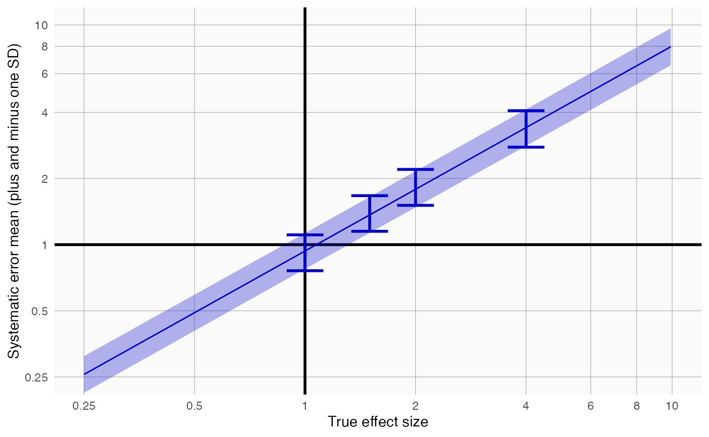

Empirical calibration of confidence intervals
Martijn J. Schuemie, Marc A. Suchard
2019-03-26
Source:vignettes/EmpiricalCiCalibrationVignette.Rmd
EmpiricalCiCalibrationVignette.RmdIntroduction
Observational studies are prone to bias, but unfortunately this bias is often brushed aside with a single comment in the discussion of a paper and is never quantified. Elsewhere we have proposed using negative controls (exposure-outcome pairs where the true relative risk is believed to be one) to produce an empirical bias distribution, and subsequently calibrate p-values. Here we extend this approach to calibrated confidence intervals (CIs). However, this requires us to specify how systematic error changes with true effect size. We currently support two approaches:
The first is for the researcher to specify an assumption, for example to specify that systematic error doesn’t change as a function of true effect size. Although this is likely to be correct in many instances, if an estimation method is for example biased towards the null the assumption will be violated, and the calibrated confidence intervals will have a lower than nominal coverage.
The second approach is to us positive controls to empirically derive how systematic error changes with true effect size. Since real positive controls are problematic, we typically generate synthetic positive controls by injection additional (simulated) outcomes on top of negative controls.
In this document we use an example study to illustrate how CIs can be calibrated using the EmpiricalCalibration R package. In the example, we have replicated a previously published new-user cohort study comparing dabigatran to warfarin for the risk of GI bleeding. The study does not apply any adjustment for confounding.
The results from this study are available in the package, and can be loaded using the data() command:
The estimate for the outcome of interest can in this dataset be identified because trueLogRr is NA:
outcomeOfInterest <- southworthReplication[is.na(southworthReplication$trueLogRr), ]
outcomeOfInterest## outcomeName trueLogRr logRr seLogRr
## 1 GiBleed NA -0.3575234 0.06668903## rr lb ub
## 0.6994063 0.6964876 0.7023372Here we see that the effect estimate for GI bleed for dabigatran versus warfarin is 0.7, with a very tight CI.
Negative controls
Negative controls are drug-outcome pairs where we believe the drug does not cause (or prevent) the outcome. In other words, we believe the true effect size to be a relative risk of 1. We would prefer our negative controls to have some resemblance with out hypothesis of interest (in our example dabigatran vs warfarin and GI bleed), and we therefore typically pick negative controls where the outcome is the same (exposure controls), or the exposure is the same (outcome controls). In this example, we have opted for outcome controls, and have identified a set of outcomes not believed to be caused by either dabigatran or warfarin. We have executed exactly the same analysis for these outcomes, resulting in a set of effect size estimates, one per negative control:
negatives <- southworthReplication[southworthReplication$trueLogRr == 0 &
!is.na(southworthReplication$trueLogRr), ]
head(negatives)## outcomeName trueLogRr logRr seLogRr
## 4 Neck pain 0 -0.10015508 0.05005106
## 6 Curvature of spine 0 0.01854604 0.08024194
## 10 Dislocation of joint 0 -0.14348342 0.11084576
## 14 Peripheral vertigo 0 -0.03627483 0.08998388
## 21 Effusion of joint 0 -0.20650211 0.06302084
## 25 Urinary tract infectious disease 0 -0.25308826 0.03858693Positive controls
Positive controls are drug-outcome pairs where we believe the drug does cause (or prevent) the outcome. In this case we have generated synthetic positive controls with various true effect sizes. Similar to the negative controls we have executed exactly the same analysis for these outcomes, resulting in a set of effect size estimates, one per positive control:
data(southworthReplication)
positives <- southworthReplication[southworthReplication$trueLogRr != 0 &
!is.na(southworthReplication$trueLogRr), ]
head(positives)## outcomeName trueLogRr logRr seLogRr
## 2 Neck pain 1.3862944 1.1466961 0.03324708
## 3 Neck pain 0.6931472 0.5539283 0.03959980
## 5 Neck pain 0.4054651 0.2888025 0.04344616
## 7 Curvature of spine 1.3862944 1.3519970 0.05327228
## 8 Curvature of spine 0.6931472 0.6918903 0.06357177
## 9 Curvature of spine 0.4054651 0.4272736 0.06932738Plot control effect sizes
We can start by creating a forest plot of our controls:
controls <- southworthReplication[!is.na(southworthReplication$trueLogRr), ]
plotTrueAndObserved(controls$logRr, controls$seLogRr, controls$trueLogRr)
The thick black lines indicate the true effect size, and the blue and orange dots and lines represent the effect size estimate and 95% confidence intervals of the controls. We see that many controls have a confidence interval that does not include the true effect size (orange lines), certainly more than the expected 5%. This indicates the analysis has systematic error.
Systematic error model
Fitting the empirical null, and specifying an assumption
If we only have negative controls and no positive controls, we might still want to calibrate CIs. This requires us to make an assumption how systematic error changes as a function of the true effect size. The most obvious (and therefore default) assumption is that the systematic error does not change as a function of true effect size. We can fit the empirical null distribution, and convert it to a systematic error model:
See ?convertNullToErrorModel for how to use a different assumption.
Fitting the systematic error model using positive controls
If we do have positive controls, like in this example, we do not have to make an assumption, but instead can estimate the full systematic error model using the estimates for both negative and positive controls:
## meanIntercept meanSlope logSdIntercept logSdSlope
## -0.06655103 0.93329424 -1.67417066 0.01575879
## attr(,"CovarianceMatrix")
## [,1] [,2] [,3] [,4]
## [1,] 5.645229e-04 -0.0005483258 9.364782e-05 -0.0001833231
## [2,] -5.483258e-04 0.0009044631 -1.934024e-04 0.0003556884
## [3,] 9.364782e-05 -0.0001934024 9.131157e-03 -0.0087454417
## [4,] -1.833231e-04 0.0003556884 -8.745442e-03 0.0137776815
## attr(,"LB95CI")
## [1] -0.1131192 0.8743497 -1.8614591 -0.2142986
## attr(,"UB95CI")
## [1] -0.01998289 0.99223878 -1.48688221 0.24581617
## attr(,"class")
## [1] "systematicErrorModel"We see that the intercept of the mean (meanIntercept) is slightly lower than 0, indicating the analysis is negatively biased when the null is true. Also note that the slope for the mean (meanSlope) is slightly lower than 1, meaning that the method appears to be somewhat biased towards the null; the negative bias tends to become larger as the true effect size increases.
We can also visualize the model:

Here we see how systematic error changes as a function of the true effect size. As visible, the model assumes the mean and standard deviation (SD) of the error distribution are linearly related to the true effect size. For this plot, the mean and SD are also estimated at each true effect size independently, allowing us to evaluate whether the linearity assumption is far off.
There is also another way to plot the error model, and its subsequent calibration:

Evaluating the calibration
To evaluate whether our estimation of the systematic error distribution is a good one, we can test whether the calibrated CI is truly calibrated, meaning the fraction of controls where truth is inside the calibrated CI is approximately the specified width of the CI. We also evaluate ‘centeredness’, whether truth outside of the CI is equally distributed above and below the CI:
plotCiCoverage(controls$logRr,
controls$seLogRr,
controls$trueLogRr,
crossValidationGroup = controls$outcomeName)## Fitting error models within leave-one-out cross-validation
The data shown here is produced using a leave-one-out cross-validation. It is important to remember that for this dataset positive controls were generated based on negative controls and will therefore be correlated. To perform an unbiased evaluation the ‘one’ in the leave-one-out should therefore be the group of a negative control and its derived positive controls, and this is achieved by specifying the crossValidationGroup argument. Thus, in this evaluation for each negative control and the positive controls derived from that negative control, we fit systematic error models using all other controls, and compute calibrated CIs for the left-out controls across a wide range of widths.
In the graph the dashed lines indicate a perfectly calibrated study. We see that the calibrated CIs are much closer to the ideal than the uncalibrated CIs.
Confidence interval calibration
Calibrating the confidence interval
We can now use the estimated systematic error model to compute the calibrated CI for our outcome of interest:
## logRr logLb95Rr logUb95Rr seLogRr
## 1 -0.3117815 -0.7254078 0.1067071 0.2122781## logRr logLb95Rr logUb95Rr
## 1 0.7321415 0.4841271 1.112608In this case, even though the point estimate has not changed much, the calibrated CI is much wider than the uncalibrated one to take in to account the residual error due to lack of any adjustment for confounding.
References
##
## To cite EmpiricalCalibration in publications use:
##
## Schuemie MJ, Ryan PB, DuMouchel W, Suchard MA and Madigan D
## (2014). "Interpreting observational studies: why empirical
## calibration is needed to correct p-values." _Statistics in
## Medicine_, *33*(2), pp. 209-218. <URL:
## http://dx.doi.org/10.1002/sim.5925>.
##
## Schuemie MJ, Hripcsak G, Ryan PB, Madigan D and Suchard MA (2018).
## "Empirical confidence interval calibration for population-level
## effect estimation studies in observational healthcare data."
## _Proc. Natl. Acad. Sci. U.S.A._, *115*(11), pp. 2571-2577. <URL:
## https://doi.org/10.1073/pnas.1708282114>.
##
## To see these entries in BibTeX format, use 'print(<citation>,
## bibtex=TRUE)', 'toBibtex(.)', or set
## 'options(citation.bibtex.max=999)'.